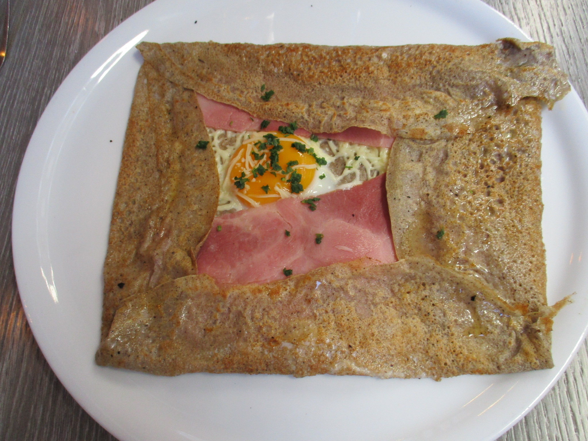

Home
Galettes

A marginally healthier take on the classic crepe.
Ingredients
- 2% Milk
- Flour
- Eggs
- Eggs
- Cooking Oil
- Salt
Steps
-
In a bowl, mix flour, eggs, and milk, adding a pinch of
salt.
- Add cooking oil to pan, then pour mix thinly into pan.
- Flip when appropriate.
- Add ham, cheese and additional egg to crepe surface.
- Cover pan with lid. Cook for 5 minutes.
-
Remove galette from pan, turn corners over as seen in the photo, and
enjoy.